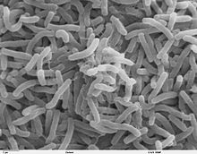

MAANA HALISI YA
KIPINDUPINDU:
KIPINDUPINDU:
Pamoja na kuwa neno hili sio geni miongoni mwa wengi lakini kwa lengo la kukumbushana na kupata faida zaidi niseme kwamba kipindupindu ni ugonjwa wa kuharisha unaokuja ghafla mara tu mtu anapopata maambukizi.
Na maambukizi ya kipindupindu huwa yanapatika kupitia mdomoni pale mtu anapokula kinyesi cha mtu mwenye ugonjwa huu aidha kwa kupitia kwenye maji au chakula. Kitaalam magonjwa yanayoambukizwa kwa namna hii yanaitwa "feacal oral disease".
Ugonjwa huu umekuwa ukiathiri nchi tofauti ulimwenguni, kwani takwimu zinaonesha kwamba kati ya watu milioni 3 hadi 5 huugua ugonjwa huu kila mwaka duniani na zaidi ya watu 100,000 hufariki dunia.
Kipindupindu husababishwa na vimelea aina ya Vibrio cholerae wanaosababisha kuhara majimaji yenye rangi kama maji ya mchele
Tanbihi:
Vimelea hivi vya kipindupindu haviwezi kuonekana kwa macho mpka kwa kupitia kifaa maalum cha kutizamia (Darubini)

Mtu Huweza kupata kipindupindu kwa kutegemeana na wingi wa vimelea mtu alivyomeza, inaweza kuchukua masaa mpaka siku tatu hadi dalili kujitokeza.